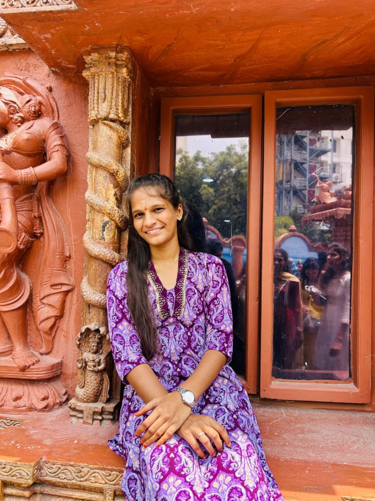
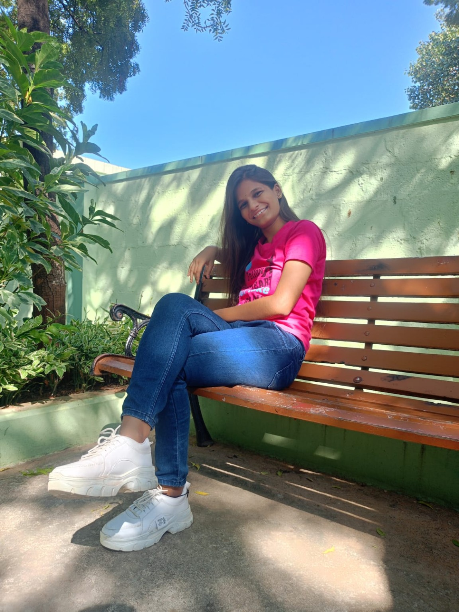
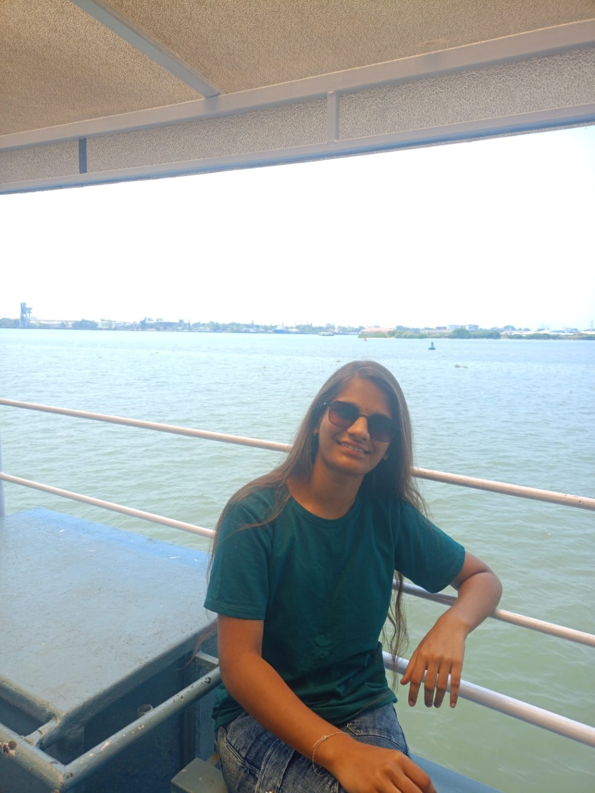
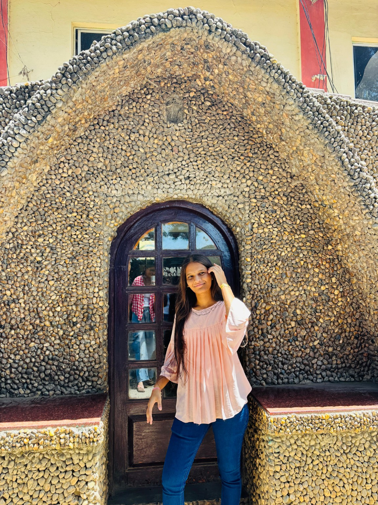

I couldn't give you a gift in person... so I made you a little world instead. 💜
HOW IT STARTED 🤍
Randomly met. Unexpectedly close.
We randomly met through an internship. 🤗 Then came that first call... and somehow, you just matched my vibe. 🙈
From that first conversation, something felt different. Easy. Natural. Like I could just talk to you without thinking too much.
I still don't know exactly how you became this close to me... but I'm really glad you did. 🫂💎
“Some people enter your life randomly and somehow become one of your favourite people.”

THINGS MACHA LIKES ABOUT ASTRA JII 💜
It's the little things...
🥹
That laugh
Honestly, your laugh is one of my favourite things about you. It just has something about it.
🫶
Your kind heart
You're genuinely kind-hearted, and I really appreciate the way you care about me.
🌷
The way you care
Even from far away, somehow your care still reaches me. That means more than I say.
✨
Our vibe
From the first call, talking to you felt easy. Somehow our vibes just matched.
“Some people may be far away, but somehow they still feel close to the heart.” 💜
A FEW SNAPSHOTS 📸
Just because you're you.
Madam Jii ✨

That smile 💜

Astra Jii 🌷

Just you 🥰
A LITTLE TRUTH 🫂
You became important.
I never thought I'd get this close to someone like this in my entire life. 🫂💎
I'm a little possessive about our friendship, yes. 😜 But that's because I genuinely value what we have.
Even if you kick me out, Macha isn't going anywhere. 💯🫂
And when you're at your lowest, I'm here for you too — 24/7 service available. 🤟😂
“Distance can separate two people, but it can't make a genuine bond feel far away.”
JUST FOR FUN 👀
One tiny question...
What is one thing Macha genuinely likes about Astra Jii?
FROM MACHA 💌
Dear Astra Jiii, 💜
Happy Birthday! 🎈🎀🥰 Have the most memorable day ever. ✨
I honestly don't know how you became this close to me, but I'm really glad you did. I love the way you speak, the way you laugh, and the way you somehow just match my vibe. 🙈
I feel blessed to have such a nice person in my life. Thank you for handling all my annoyance, for caring about me, and especially for being there when I'm at my lowest. 🫂💪
In one word, you're simply “AWESOME.” 🫂💎💓
I've never written this much or expressed my feelings like this to anyone before. You're the first person I've written something like this for. 🤗
Please safeguard this friendship forever. 🧿 Whenever you need me, I'm here — 24/7 service available. 🤟😂
Even though we're far away, I'm really happy that our bond still feels this close. 🌍🫂
And don't forget to give me a treat! 😜🎂
I'm far away, so I can't give you a physical gift... 😔 So I made this little gift for you instead. 🤭🎁💜
“Distance may keep us apart, but somehow it never managed to make our friendship feel far away.” 💜
Once again, Happy Birthday, Astra Jiii! 🎉🎂🥳🎀💜 — Your Macha 🫂💎